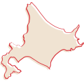

北海道

北海道の自然恵みと美食の楽園
海の幸から風味豊かな農産物まで
北海道は、日本の最北に位置し、四季折々の自然と風景が魅力の地ですが、その中でも食品文化が特に印象的です。北海道は新鮮な海産物、豊かな大地からの新鮮な農産物、そして乳製品の宝庫として知られています。
新鮮な海の幸を楽しむなら、北海道の寿司や海鮮丼が最高です。新鮮な魚介類がそのままお皿に届けられ、口の中で溶けるような美味しさを味わえます。
また、北海道の大地からは新鮮な野菜、ジャガイモ、とうもろこし、大豆などが収穫され、美味しい料理の材料として使われます。ジャガイモを使ったポテト料理やとうもろこしの甘さを楽しむ料理は地元の人々に愛されています。
さらに、北海道は乳製品の生産が盛んで、美味しいチーズ、バター、アイスクリームなどが豊富にあります。特に北海道産の生乳を使用したものは、クリーミーで風味豊かです。
北海道の食品は、その豊かな自然環境から生まれたもので、地元の風味を楽しむことができます。北海道を訪れた際には、その美食をぜひ堪能してみてください。